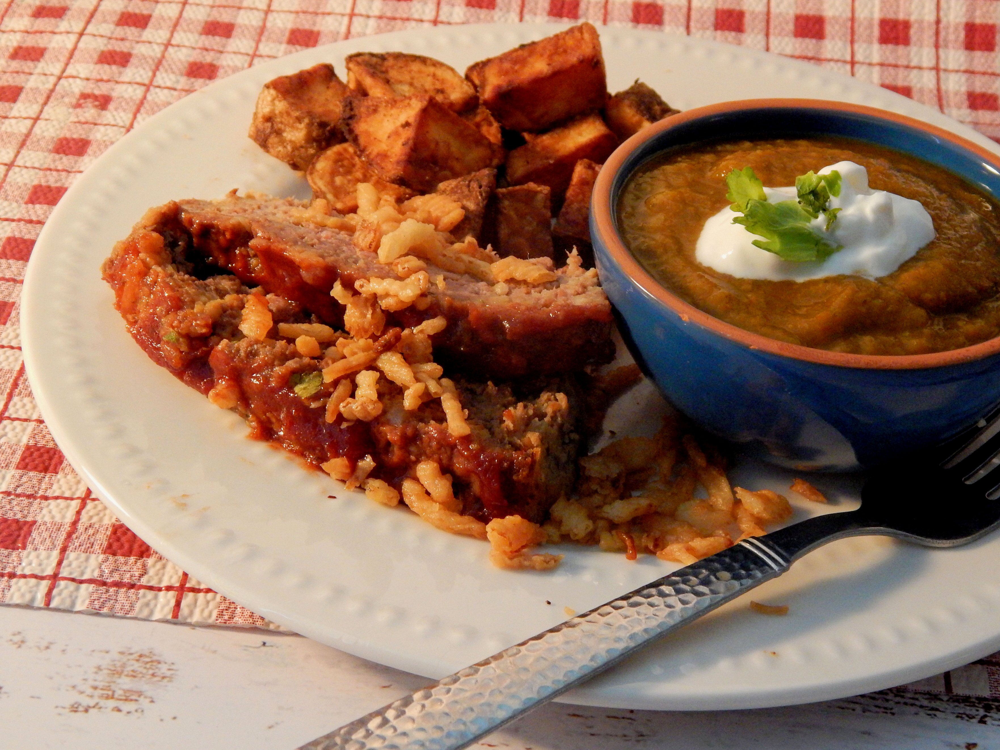

French Onion Meatloaf

Description
A family favorite! The French-fried onions really make this meatloaf super yummy! Excellent paired with mashed potatoes and green beans with bacon.
Ingredients
- cooking spray
- ½ cup ketchup
- 1½ pounds ground beef
- ¾ cup bread crumbs
- 2 large eggs
- ½ cup sour cream
- ¼ cup milk
- 1 (1 ounce) package French onion soup mix
- 2 teaspoons garlic powder
- 1½ teaspoons salt
- ¼ teaspoon cracked black pepper
- ¼ teaspoon ground ginger
Steps
- Preheat the oven to 350 degrees F (175 degrees C). Spray a 9x5-inch loaf pan with cooking spray; spread ketchup and brown sugar over the bottom.
- Combine beef, French-fried onions, bread crumbs, eggs, sour cream, milk, soup mix, garlic, salt, pepper, and ginger in a large bowl. Mix well and shape into a loaf over the ketchup and brown sugar.
- Bake in the preheated oven until no longer pink in the center, about 1 hour. An instant-read thermometer inserted into the center should read at least 160 degrees F (70 degrees C).